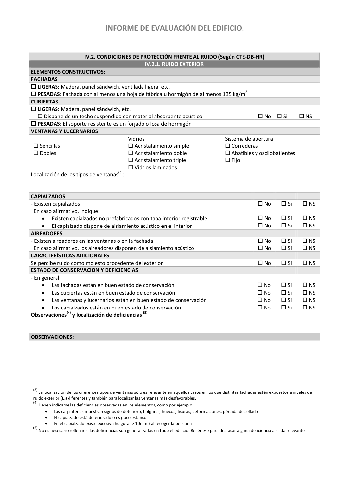

<!doctype html>
<html lang="es"><head><meta charset="utf-8">
<meta name="viewport" content="width=device-width, initial-scale=1">
<title>GUIA · Página física 43</title><link rel="stylesheet" href="../estilo.css">
</head><body>
<nav><a href="../index.html">Índice</a> › <a href="../doc/guia-pdf-a5d4ef5252ba-2016-11-01-813669d3066c.html">GUIA</a></nav>

<h1>GUIA · Página física 43</h1>
<header class="meta"><p><strong>IEE 2016</strong> · edición 2016-11-01 · capa guia</p>
<p>Documento <code>GUIA-PDF-a5d4ef5252ba</code> · SHA-256 del PDF <code>813669d3066c0ff79457d57b80b0512a4fbb248bc5db1f7baf473c369a064738</code></p>
<p>Página física 43 de 65.</p>
<p><a href="../../contenido/docs/GUIA-PDF-a5d4ef5252ba/2016-11-01__813669d3066c/fuente.pdf#page=43">Copia fiel del PDF fuente</a> · <a href="https://www.codigotecnico.org/pdf/Documentos/HR/IEE_2016.pdf">Fuente oficial</a></p>
<p><a href="https://www.codigotecnico.org/Guias/GuiaIEE_HR.html">Ficha de la disposición en la fuente oficial</a></p>
<div class="cita"><p><a href="../../contenido/docs/GUIA-PDF-a5d4ef5252ba/2016-11-01__813669d3066c/fuente.pdf#page=2">Créditos y autoría en el PDF fuente</a>. Reproducción con cita de fuente y autores.</p>
<p>Permiso literal: Se permite la reproducción del contenido total o parcial de esta Guía siempre y cuando se haga citando la fuente original.</p>
<details><summary>Leer los créditos completos y la autoría</summary><pre class="literal">                    Guía para la cumplimentación de la parte IV del IEE. Condiciones básicas de protección frente al ruido


Dirección y coordinación

Luis Vega Catalán

Mª Cristina Colomo Fernández

Eduardo González de Prado

Dirección General de Arquitectura, Vivienda y Suelo. Ministerio de Fomento

Mª Teresa Carrascal García

Instituto de Ciencias de la Construcción Eduardo Torroja. IETcc- CSIC


Autores

Mª Teresa Carrascal García

Amelia Romero Fernández

Mª Belén Casla Herguedas

Unidad de Calidad en la Construcción del Instituto de Ciencias de la Construcción Eduardo Torroja IETcc- CSIC


Se agradece la colaboración de


Belén Delgado Giménez

Fundación FIDAS

Alberto Esteban González

C.T.O. Estudios y proyectos – Gikesa

Giovanni Muzio

C.T.O. Estudios y proyectos

Francisco Labastida Azemar

Arquitecto, asesor CSCAE

Pedro F. Nogueira López

Universidad de A Coruña

Alejandro Sansegundo Sierra

Acústica SanSegundo


Esta Guía para la cumplimentación de la parte IV del IEE. Condiciones básicas de protección frente al ruido, nace en el marco del

convenio de colaboración llevado a cabo entre el Ministerio de Fomento y el Instituto de Ciencias de la Construcción Eduardo Torroja y

forma parte de la estrategia de este Ministerio de generar una serie de documentos de ayuda que faciliten la aplicación de la normativa

de la edificación y que en este caso concreto, ofrezca a los técnicos criterios para poder realizar una evaluación del estado inicial de las

edificaciones en lo referente a las condiciones acústicas de las viviendas existentes y plantear medidas que incrementen su confort

acústico.


En la redacción de este documento se ha utilizado algunos de los contenidos y de las figuras de la Guía de aplicación del DB HR

Protección frente al ruido. Dicha guía puede consultarse en:

http://www.codigotecnico.org/index.php/menu-documentos-complementarios/menu-guia-aplicacion-db-hr


Se permite la reproducción del contenido total o parcial de esta Guía siempre y cuando se haga citando la fuente original.


                                                2</pre></details></div>
<div class="aviso"><strong>Alcance y límites</strong><ul><li>Extracción automática sin revisión técnica humana completa. Contraste tablas, fórmulas, notas y excepciones con el PDF. La edición disponible no determina la vigencia ni la aplicabilidad a un proyecto.</li><li>Guia o documento divulgativo; no es texto normativo.</li><li>Extracción automática; el cotejo humano está pendiente.</li><li>Semántica y tablas no equivalen a validación exhaustiva.</li></ul></div></header>
<nav><a href="guia-pdf-a5d4ef5252ba-2016-11-01-813669d3066c__p0042.html">← Página 42</a> · <a href="guia-pdf-a5d4ef5252ba-2016-11-01-813669d3066c__p0044.html">Página 44 →</a></nav>
<p>Formato: <a href="../../contenido/docs/GUIA-PDF-a5d4ef5252ba/2016-11-01__813669d3066c/pagina/p0043.md">Texto de la página (Markdown)</a></p>
<p><a href="../../contenido/docs/GUIA-PDF-a5d4ef5252ba/2016-11-01__813669d3066c/bloque/p0043.json">JSON de bloques</a></p>
<pre class="literal">INFORME DE EVALUACIÓN DEL EDIFICIO. 
 
 
IV.2. CONDICIONES DE PROTECCIÓN FRENTE AL RUIDO (Según CTE-DB-HR) 
IV.2.1. RUIDO EXTERIOR 
ELEMENTOS CONSTRUCTIVOS:
FACHADAS 
 LIGERAS: Madera, panel sándwich, ventilada ligera, etc. 
 PESADAS: Fachada con al menos una hoja de fábrica u hormigón de al menos 135 kg/m2 
CUBIERTAS 
 LIGERAS: Madera, panel sándwich, etc. 
 Dispone de un techo suspendido con material absorbente acústico 
 No  Si 
 NS 
 PESADAS: El soporte resistente es un forjado o losa de hormigón 
VENTANAS Y LUCERNARIOS 
 
 Sencillas 
 Dobles 
Vidrios 
 Acristalamiento simple 
 Acristalamiento doble 
 Acristalamiento triple 
 Vidrios laminados 
Sistema de apertura 
 Correderas 
 Abatibles y oscilobatientes 
 Fijo 
 
Localización de los tipos de ventanas(3): 
 
 
CAPIALZADOS 
 
 
 
- Existen capialzados 
 No 
 Si 
 NS 
  En caso afirmativo, indique: 
 
 
 
• 
Existen capialzados no prefabricados con tapa interior registrable 
 No 
 Si 
 NS 
• 
El capialzado dispone de aislamiento acústico en el interior 
 No 
 Si 
 NS 
AIREADORES 
 
 
 
- Existen aireadores en las ventanas o en la fachada 
 No 
 Si 
 NS 
  En caso afirmativo, los aireadores disponen de aislamiento acústico 
 No 
 Si 
 NS 
CARACTERÍSTICAS ADICIONALES 
 
 
 
Se percibe ruido como molesto procedente del exterior 
 No 
 Si 
 NS 
ESTADO DE CONSERVACION Y DEFICIENCIAS 
 
 
 
- En general:  
 
 
 
• 
Las fachadas están en buen estado de conservación 
 No 
 Si 
 NS 
• 
Las cubiertas están en buen estado de conservación 
 No 
 Si 
 NS 
• 
Las ventanas y lucernarios están en buen estado de conservación 
 No 
 Si 
 NS 
• 
Los capialzados están en buen estado de conservación 
 No 
 Si 
 NS 
Observaciones(4) y localización de deficiencias (5) 
 
 
 
 
 
 
 
 
OBSERVACIONES:
 
 
 
 
 
(3) La localización de los diferentes tipos de ventanas sólo es relevante en aquellos casos en los que distintas fachadas estén expuestos a niveles de 
ruido exterior (Ld) diferentes y también para localizar las ventanas más desfavorables. 
(4) Deben indicarse las deficiencias observadas en los elementos, como por ejemplo: 
• 
Las carpinterías muestran signos de deterioro, holguras, huecos, fisuras, deformaciones, pérdida de sellado 
• 
El capialzado está deteriorado o es poco estanco 
• 
En el capialzado existe excesiva holgura (&gt; 10mm ) al recoger la persiana 
(5) No es necesario rellenar si las deficiencias son generalizadas en todo el edificio. Rellénese para destacar alguna deficiencia aislada relevante. 
 
 
 
</pre>
<figure><a href="../../contenido/docs/GUIA-PDF-a5d4ef5252ba/2016-11-01__813669d3066c/figura/p0043.png"></a><figcaption>Página visual 43, para contrastar fórmulas, tablas y figuras.</figcaption></figure><h2>Tablas extraídas</h2><p>Datos candidatos: compruebe celdas y notas en el PDF.</p><ul><li><a href="../../contenido/docs/GUIA-PDF-a5d4ef5252ba/2016-11-01__813669d3066c/tabla/p0043_t01.json">p0043_t01.json</a></li></ul>
<h2>Segmentos que incluyen esta página</h2><ul>
<li><a href="../apartado/guia-pdf-a5d4ef5252ba-2016-11-01-813669d3066c__a0031.html">a0031 · Anejo 1. Parte IV del Informe de Evaluación del Edificio / PARTE IV: CONDICIONES BÁSICAS DE PROTECCIÓN FRENTE AL RUIDO USO RESIDENCIAL VIVIENDA:</a></li>
</ul>
<footer>Generado estáticamente desde el corpus normalizado; sin JavaScript ni servicios externos. El HTML es una vista reproducible; conserve la fuente y la edición al citar.</footer>
</body></html>
